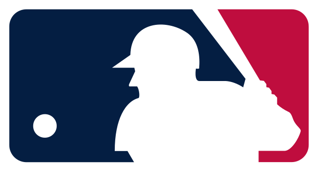

Los New York Mets son un equipo profesional de béisbol de los Estados Unidos con sede en la ciudad de Nueva York.
Compiten en la División Este de la Liga Nacional de Grandes Ligas de Béisbol y disputan sus partidos como locales en el Citi Field, ubicado en el borough de Queens.
Este equipo pertenece a la Major League Baseball. MLB
